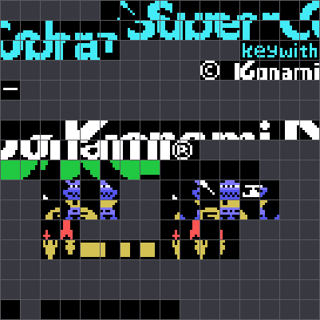
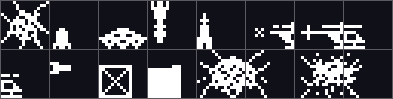

Un cartucho de 8 KB en la página 1, de 0x4000 a 0x5FFF.
4000 41 42 7d 40 00 00 00 00 ... "AB", y detrás INIT = 0x407DSolo se declara INIT; los otros tres vectores van a cero. INIT borra de golpe 0xE000 a 0xF7FF —toda la RAM que el juego usa—, deja la pila en 0xF800, escribe jp 0x402B en el gancho H.KEYI (0xFD9A) y se queda en un jr $ (0x40AD). A partir de ahí el hilo principal no vuelve a hacer nada: el juego entero corre dentro de la interrupción.
SCREEN 2, con los ocho registros saliendo de 0x4830 y subidos uno a uno por 0x4813:
| tabla de nombres | 0x3800 |
| tabla de patrones | 0x2000 |
| tabla de color | 0x0000 |
| atributos de sprite | 0x3B00 |
| patrones de sprite | 0x1800, de 16×16 |
Las direcciones que el código maneja llevan sumado 0x4000: es el bit de escritura que VPOKE le pone a D antes de mandarlas al VDP. Por eso en el listado se lee ld de,06300h donde la memoria de vídeo de verdad es la 0x2300.
SCREEN 2 parte los patrones y los colores en tres tercios de 2 KB, y este juego los quiere iguales: monta el primero y luego copia dentro de la propia memoria de vídeo, sin volver a leer la ROM (REPITE_TERCIOS, 0x4A95).
SUBE_FUENTE (0x4AA0) lee CGTBL —el puntero de la dirección 0x0004 de la ROM del BASIC— y sube 0x180 bytes de la fuente de la máquina: 48 caracteres, del 0 al _. Las cifras del marcador y las palabras del menú son las letras del MSX, no dibujos de Konami.
Y las sube dos veces, con dos desplazamientos distintos y dos colores distintos, porque en SCREEN 2 el color va por línea de patrón y el mismo carácter no puede tener dos colores.

Los 256 tiles del tercio de arriba después de montar la pantalla del título. Los grises son los que el cartucho no trae: ahí es donde caen las letras que se copian de la BIOS.
El cartucho no guarda los gráficos en crudo. Tiene dos formatos y dos rutinas:
PINTA_DIBUJO (0x4068) — dirección de memoria de vídeo, y detrás los bytes tal cual. 0xFE cierra el tramo y manda leer otra dirección; 0xFF cierra el dibujo. Su gemela BORRA_DIBUJO (0x4064) es la misma rutina: entra por dos bytes antes con C = 0x00 en vez de 0xFF, y el and c de 0x4076 convierte cada byte en un cero. Un solo bucle pinta y borra.
PINTA_ROTULO (0x4AC6) — la versión comprimida. Un byte de mando: con el bit 7 puesto vienen C bytes distintos, sin él se repite uno C veces. 0x80 abre otro tramo en otra dirección y 0x00 cierra.
Los patrones de sprite tienen un solo proveedor: el flujo de 0x443A, que es lo único de todo el cartucho que escribe en la memoria de vídeo 0x1800. Son 144 bytes en 0x1800 y 328 en 0x18A8.

Los dibujos de sprite de 16×16, sacados de la memoria de vídeo 0x1800. Salen en blanco porque el color no está en el dibujo: lo pone la ficha, cuatro bytes por sprite —fila, columna, dibujo y color—.
Las cuatro fichas con las que arranca la nave están en 0x41E4: dos mitades del helicóptero en blanco, y dos más abajo, una blanca y otra roja.
Tres canales de diez bytes cada uno desde 0xE010:
| +0 | lo que queda de la nota |
| +1 | la duración |
| +2 | el número de sonido, que es lo que mira la prioridad |
| +3/+4 | el puntero de la pista |
| +5 | la octava |
| +6 | el volumen |
| +8 | la envolvente |
| +9 | el sonido encadenado |
Un sonido puede llevarse uno, dos o tres canales, y lo decide su número: por debajo del 0x89 uno, del 0x89 al 0x8C dos, del 0x8D en adelante tres (0x5CAC).
Los doce periodos de la tabla de 0x5E55 son un byte cada uno: son los de la octava más alta, y las de abajo salen doblando el periodo (0x5E43).
Estos 269 bytes son casi los mismos que los de Athletic Land: ver Hallazgos.
| bytes | ||
|---|---|---|
| código trazado | 5.783 | 70,59 % |
| datos identificados | 2.409 | 29,41 % |
| sin explicar | 0 | 0,00 % |
Los únicos huecos del cartucho son tres: doce ceros en la cabecera (0x4004), diez en 0x506D y doce bytes de 0xFF de 0x5FF4 a 0x5FFF, detrás del final de la última pista de sonido.